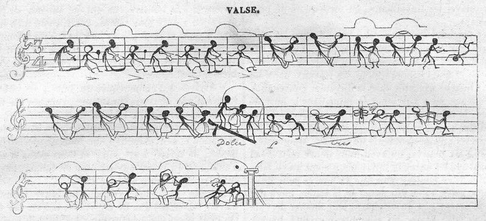

"Publishing is a door that leads you to a room full of shared thoughts."

Publishing is also...
Public Domain Archive: Waltz, 1840. https://pdimagearchive.org/images/0881decf-ba22-4abe-8c46-f8cac6f4dc3b/